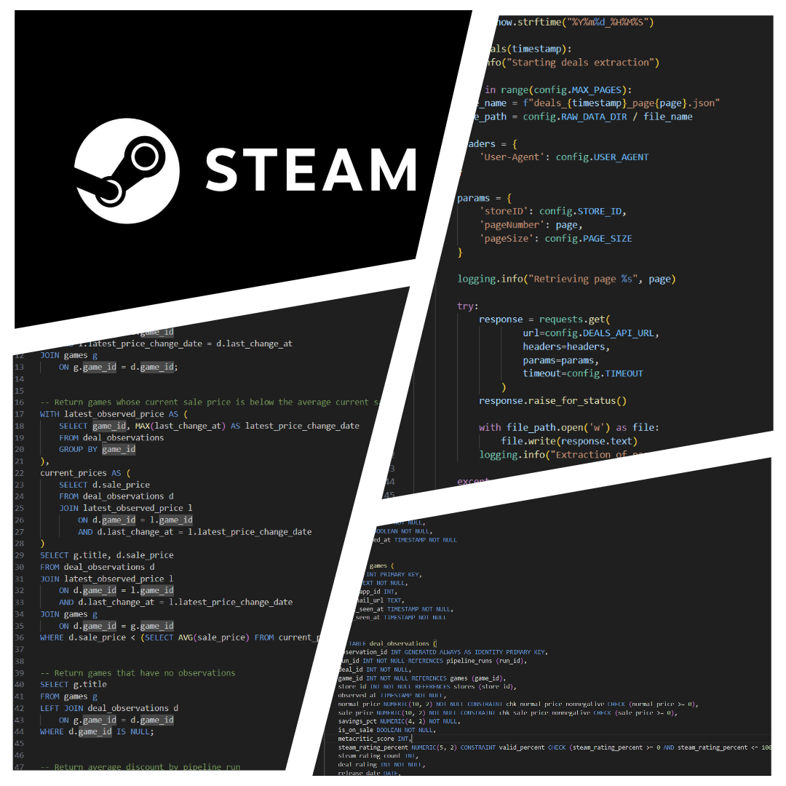

Steam Deals Pipeline
(In Progress)
This project builds an automated data pipeline that extracts Steam game deal data from an API, stores raw data for reproducibility, and loads structured historical observations into PostgreSQL to track prices, discounts, ratings, and deal changes over time.

Project Overview
This project builds an end-to-end data pipeline that extracts Steam game and deal data from an API, preserves raw source data, and transforms it into structured records for storage and analysis. Historical observations are used to track changes in game prices, discounts, ratings, and deal availability over time.
The goal is to create a reliable, reproducible data workflow that turns frequently changing API data into analysis-ready datasets while demonstrating core data engineering practices such as API extraction, data modeling, pipeline logging, validation, and cloud storage. This makes it possible to analyze how Steam deals change over time rather than relying on a single snapshot of current prices.
Dataset
Deal data is collected from the CheapShark API, which provides information on games and their available Steam deals. Each pipeline run extracts fields including game and deal identifiers, normal and sale prices, discount percentages, Steam ratings, deal ratings, release dates, and timestamps indicating when deals were last changed.
The pipeline preserves the original API responses as raw JSON files before processing the data into structured records. Because the pipeline runs repeatedly, each extraction creates a new set of deal observations rather than overwriting previous prices, allowing changes in pricing and discounts to be tracked historically.
The processed data is stored in a PostgreSQL relational model consisting of games, stores, pipeline runs, and deal observations. The deal_observations table contains the historical measurements and links each observation to its corresponding game, store, and pipeline run, providing an analysis-ready dataset for examining Steam deal and pricing trends over time.
Tools & Technologies
- Python: Automation, extraction, cleaning, loading
- SQL: Analytical querying
- PostgreSQL: Local data storage and management
- AWS: Cloud data storage and management
- Docker: Containerization
- Snowflake: Warehousing
- dbt: Transformation
- Airflow: Workflow orchestration